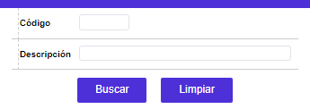
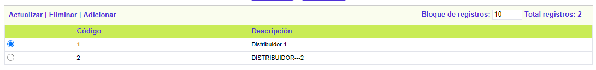
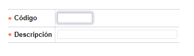
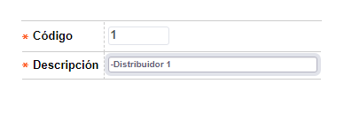

Mantenimiento de distribuidores
Mediante esta opción la entidad puede efectuar el mantenimiento de la tabla que contiene los diferentes códigos de distribuidor a utilizarse en las tarjetas Visa Distribución, dato que es capturado durante el proceso de ingreso de la solicitud de nuevo crédito en el campo denominado código alterno.
Para la correcta utilización de este campo es necesario que en la opción Parámetros número de tarjeta, al momento de definir la manera como se va a conformar el número de tarjeta para los productos visa distribución, se incluya el campo Código alterno como uno de los componentes de dicho número.
Al ingresar a la opción se muestra un filtro en el que es posible consultar los códigos de distribuidor existentes, bien sea por el código o la descripción. Por defecto, el formulario trae todos los registros existentes en la base.


El formulario contiene las opciones Actualizar, Eliminar y Adicionar.
Adicionar: Si el usuario invoca la opción Adicionar se despliega un nuevo formulario con los siguientes campos.

Descripción de campos
Código |
Campo numérico de 3 dígitos, obligatorio, asignado a cada uno de los códigos de distribuidor que se desea parametrizar. |
Descripción |
En este campo alfanumérico de hasta 30 caracteres, obligatorio, se ingresa el nombre o descripción asociado a cada uno de los códigos definidos en el campo anterior. |
Actualizar: Si el usuario selecciona un regitro e invoca la opción Actualizar se despliega un formulario en el cual el único campo modificable es Descripción.
